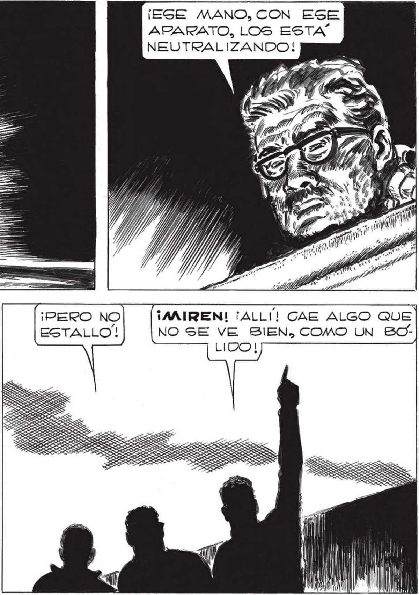
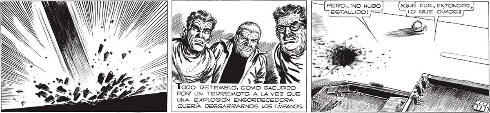

268 ¡OTRA VEZ LOS COHETES! ¡ESE MANO, CON ESE ARARATO, LOS ESTA NEUTRALIZANDO! XX Ni ¡PERO NO ¡AAIREN! ¡ALLÍ! CAE ALGO QUE Un RUIDO VIOLENTO, . ESTALLO'! NO SE VE BIEN, COMO UN BO” DESDE UN LADO,NOS HIZO VOLVER. INN OS ' 1), ANG ¿QUÉ FUE, ENTONCES, NA | MIN ' e o (OST | LO QUE OÍMOG? COMO SACUDIDO POR UN TERREMOTO. A LA VEZ QUE UNA EXPLOSION ENSORDECEDORA QUERÍA DESGARRARNOGS LOS TIMPANOG,

